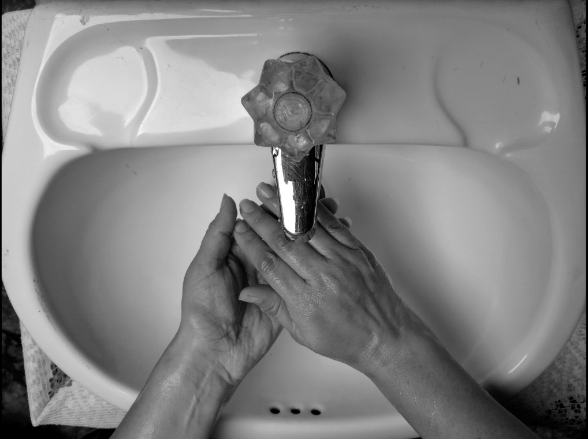
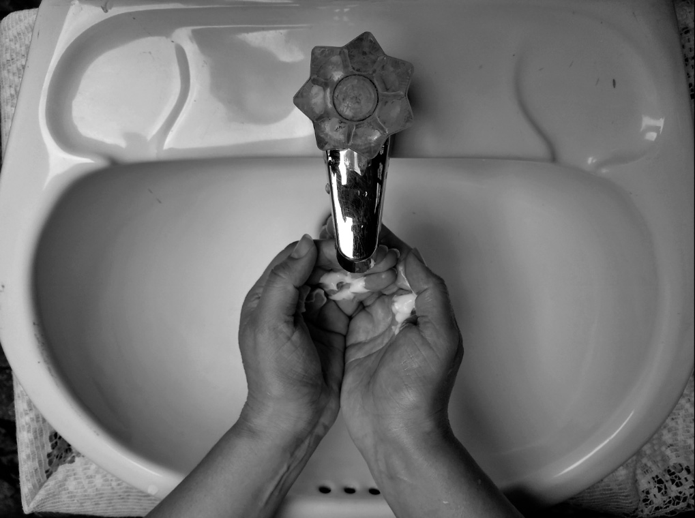
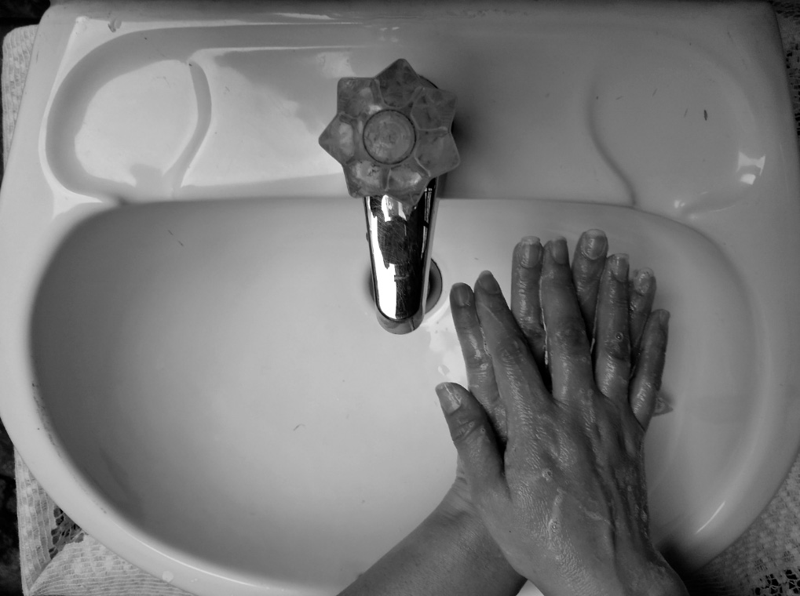
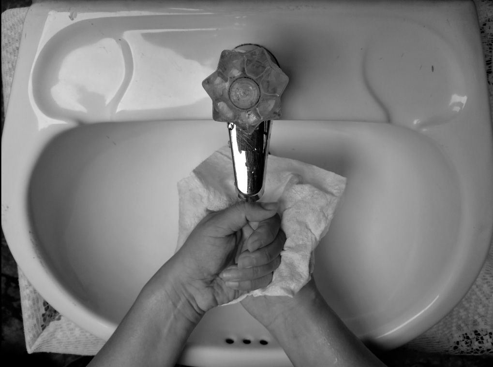

IF
La familia Galindo que está compuesta; Mis abuelos Saúl y Nohemí, mi mamá Yvonne y Geoffrey acompañados de nuestra mascota Pancho, llevaba a cabo las medidas de aseo de nuestro lavado de manos de forma común y corriente, haciendo la limpieza normal en ellas, pero desde que se inició el proceso de cuarentena, el pasado 20 de marzo en nuestro país, lamentablemente por el Coronavirus Covid- 19, hizo que nuestra familia iniciara de forma inmediata, diferentes procesos para el cuidado de nuestra salud, entre los diversos protocolos de prevención, está la higiene en nuestras manos con el constante lavado, donde cada vez que uno de los miembros de la familia sale a sus diferentes actividades debe cumplir de forma casi obligatoria este proceso, y que obviamente no estaba dentro de la cotidianidad del día a día antes de la pandemia.
Ahora, cada vez tomaba fuerza e importancia a medida que se conocía las diferentes estadísticas que se registraban en nuestro país del aumento de contagiados, se lleva con más prioridad la constancia de la medida del aseo de las manos y que se realice con buena técnica en casa, haciendo mas importante el lavado de las manos. Por eso mi familia monto un lavamanos, específicamente ubicado en la entrada, para que como comunidad que somos mantengamos de forma frecuente el buen lavado durante el día, así mismo mamá nos mostró con un ejemplo que ella misma lo efectuó, señalando la forma correcta y adecuada según la Organización Mundial de Salud.
Recalcando que para un buen procedimiento a la hora del lavar nuestras manos, aparte de humedecerlas y aplicar bastante jabón para que este operé por 40 o 60 segundos y frotar las palmas entre sí, lo nuevo que vimos fue que se debe frotarse la palma de la mano derecha contra el dorso de la mano izquierda entrelazando los dedos y viceversa; también frotar el dorso de los dedos de una mano con la palma de la mano opuesta; importante con un movimiento de rotación el pulgar izquierdo, atrapándolo con la palma de la mano derecha y viceversa; y el hecho de ya no secarnos con la toalla de manos, sino con una toalla desechable y por ultimo con esta toalla cerrar el grifo para evitar el contacto.

Sin olvidar que esto es un proceso muy sencillo e importante y que sabemos que lamentablemente existen personas que no lo toman en serio, mamá nos hizo el énfasis que se debe llevar acabo minimo cada dos horas, independientemente que salgamos o no, para así ayudar a eliminar cualquier pandemia evitando su expansión y obtener buena salud entre nosotros.

En conclusión, nosotros los seres humanos independientemente que pase o no la cuarentena en este semestre, nos ha demostrado que no solo por una pandemia como el Covid-19, debemos siempre realizar una correcta y debida limpieza, para así evitar otros tipos de contagios que se pueden adquirir fácilmente, entre ellos: neumonía, tuberculosis, hepatitis B, cólera, salmonelosis etc, lo positivo de esta vivencia es que hemos tomado conciencia de más cuidados a los que comúnmente realizábamos y hasta evitamos futuros gastos innecesarios, salvemos nuestras vidas, cuidemos de los demás personas y cuidémonos nosotros mismos